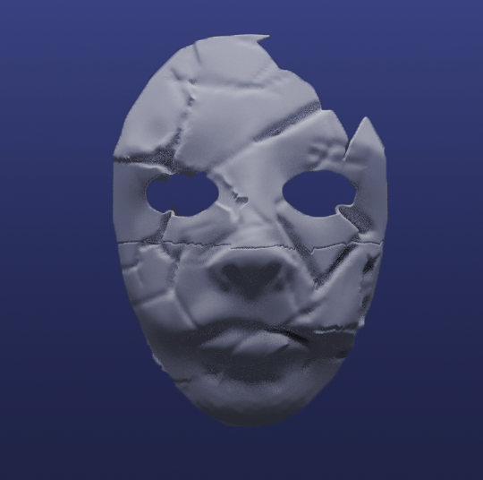
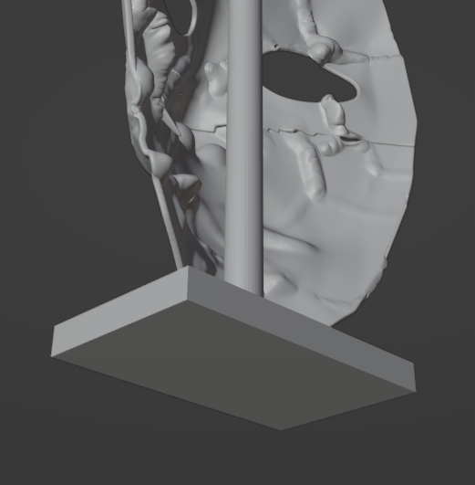
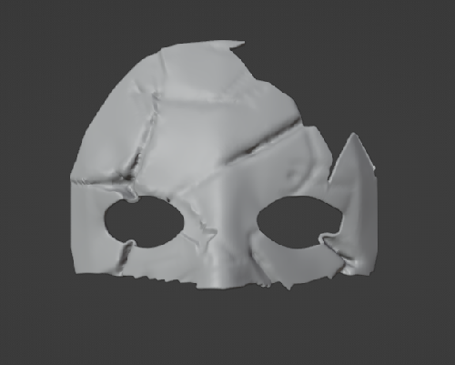

But the hardest part was during the printing, as there was no support or base to hold the mask steady while it was being printed. To solve this, I created a platform at the bottom of the mask, with a straight support running through the middle to keep it steady.
However, even then, after reaching the halfway point, the mask became unstable and fell during printing. The solution was to print the complete lower half with the support, and then print the upper half separately. Since the upper half already had a more stable shape, it did not require support to be printed.


And finally, after several hours of printing, testing, revisions, and edits to the model, the mask was successfully printed and finished with a beautiful polish. Every detail was carefully worked on to ensure the mask retained its fragmented look without losing structural integrity. The final result exceeded our expectations, combining aesthetics and functionality in an impeccable way. This is the final result, a piece that not only represents our dedication and effort but also innovation in design and 3D printing.